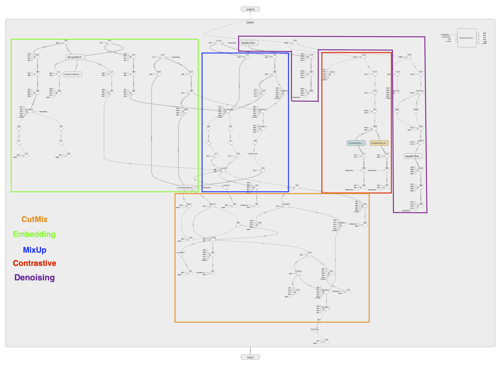
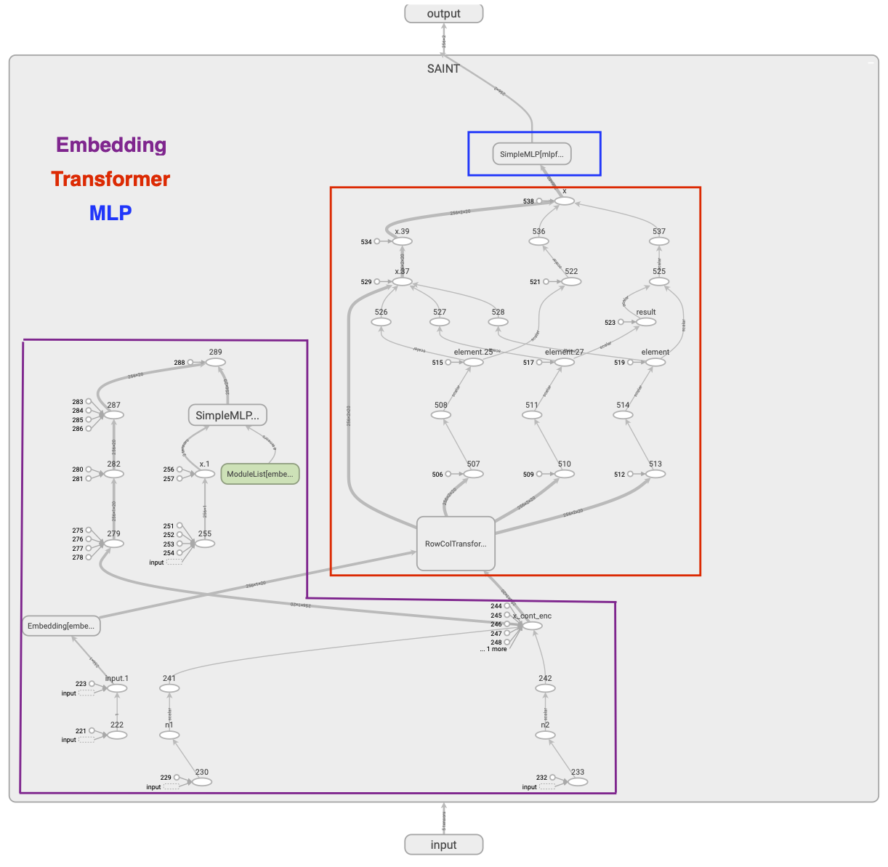

Network Architecture
There are also contrastive self-supervised pre-training methods that can be used when labels are scarce.
Components
SimpleMLP: It’s a Neural Network that consists of 2 Linear Layers and between them a non linear activation function and a Dropout layer
SepMLP: It applied a different SimpleMLP for each feature in input independently and then append the results
RowColTransformer: It’s a Transformer that allow to apply SelfAttention, and can be of 3 types: row, col, rowcol
Pretraining
In this section we will consider the case to use as augmentation both CutMix and Mixup, and to use as pretrained tasks both contrastive and denoising
Steps
Compute Embeddings: using an embedding Layer for all the categorical features and one SimpleMLP for each continuous feature
Apply CutMix augmentation on the input data
Compute Embeddings of the noised data after CutMix
Apply MixUp augmentation on the embedding obtained in step 3
In the Contrastive step the objective is that the embeddings of the original values, and the embeddings of the augmented ones must be similar
In the Denoising step given the embeddings after the application of augmentation task it tries to reconstruct the original values, and compute the loss separating the continuous values, using MSE loss, from the categorical where is used the cross entropy loss. Then return the combination of the loss functions
Training
Steps
Compute Embeddings: using an embedding Layer for all the categorical features and one SimpleMLP for each continuous feature
Apply RowColTransformer
Apply SimpleMLP in order to get the final result that can be the logits in case of a classification problem or the predicted target in case of regression